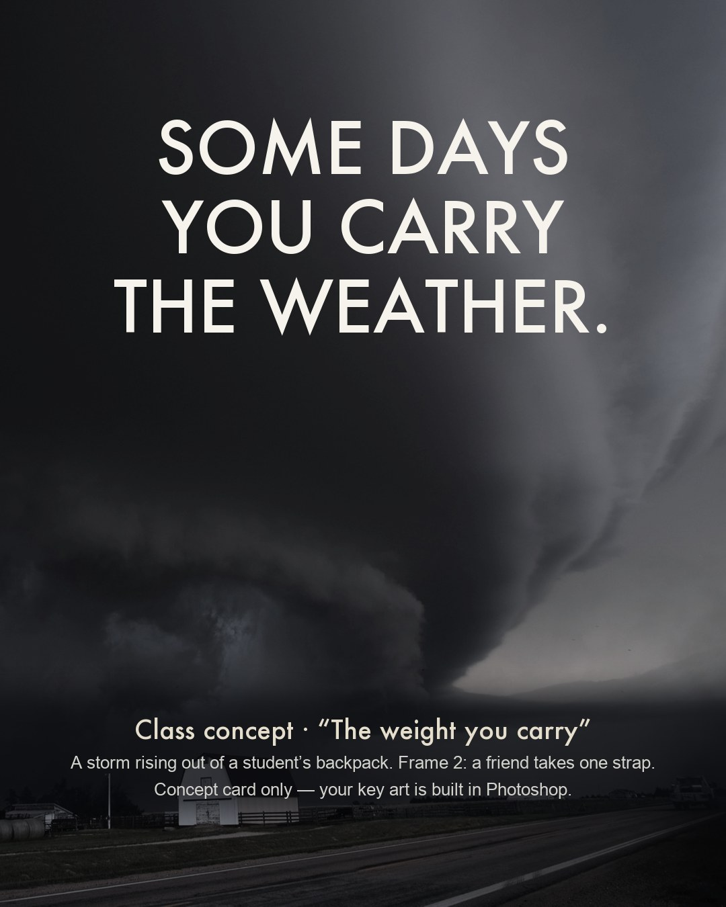
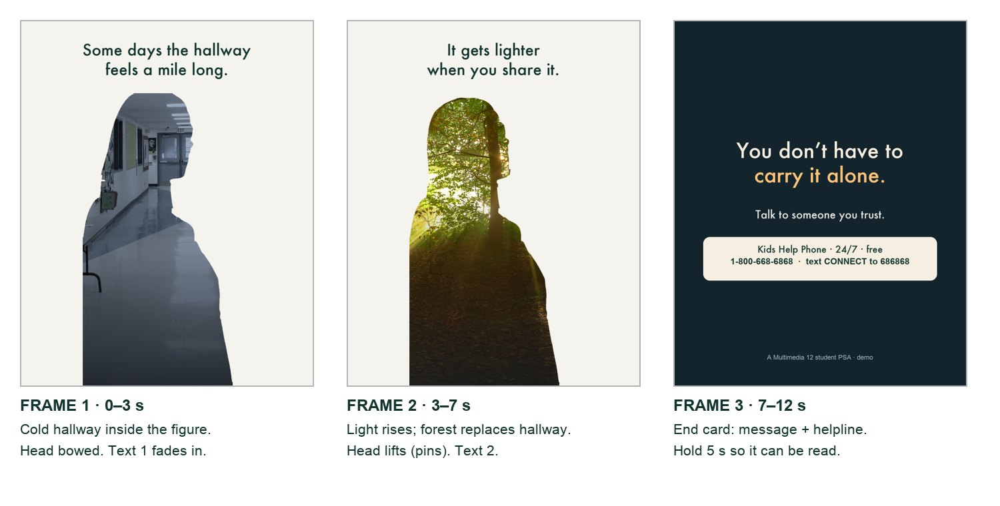
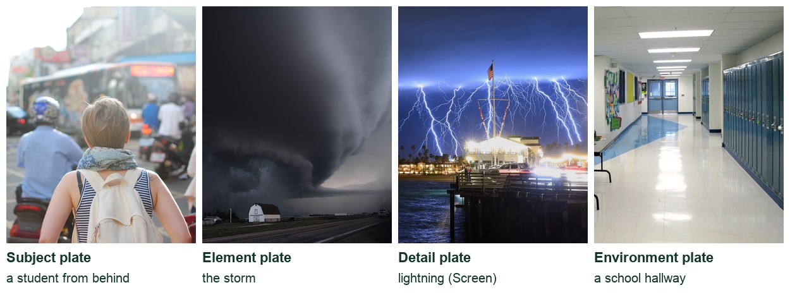

Photoshop · Multimedia 12 · Sprint 4 · Lessons 5–10 · a message in motion
MAKE IT MATTER.
Make a 15–20 second moving PSA the way an agency would: a real insight, one big idea, high-end compositing learned from the professionals, and a real next step for your audience.
Exemplar concept art (AI-generated, labelled). Your key art is built in Photoshop.
One insight. One idea. One next step.
A youth organisation is running a student-made PSA campaign on the school screens and social media. Your ad has fifteen seconds to make someone feel less alone, or to act.
My supports
Turn on any help you want. Your teacher may have set some for you. They change how the guide helps, not what is assessed.
Teacher review edition · repaired 9 October 2026
Text, assessment boundaries, recall and navigation have been repaired. This remains a Draft: complete manual Photoshop verification, action-by-action captures, genuine mistake pairs, rendered motion review and an independent cold run are pending.
Submission: the existing project Knowledge + Reflection Form is linked below. Earlier connection receipts are retained; current school-account accepting state and revised outcome/rubric bindings remain unverified. Journal controls prepare a handoff; they do not submit evidence. No fresh dashboard synchronization is claimed.
Campaign brief
A 15–20 second PSA for the school screens and social media.
Work like an agency: find an insight, turn it into one big idea, build the key visual in Photoshop with professional compositing techniques, animate it, and adapt it when the client changes the brief. Technique steps include optional professional references. Your teacher must preview them before assigning them; the linked segments have not been verified. Sprint 5 adds sound.
Approved issues
Kindness and standing up to bullying
Online pressure and comparison
Loneliness and belonging
Stress and asking for help
Being kind online
Another issue? Propose it first. Your teacher approves every concept before production.
Safe-messaging rules (every PSA)
Focus on hope, connection and help-seeking, not shock.
Never show or describe self-harm, suicide, methods or injuries, and never present them as a solution.
No blame, stereotypes or labels. Use respectful, person-first words.
End with a real, exactly copied support: Kids Help Phone (1-800-668-6868 · text CONNECT to 686868), a counsellor or a trusted adult.
Identifiable classmates only with clear permission.
Based on Mental Health Commission of Canada guidance. M1M2
You will hand in
Campaign notes, insight, big idea, storyboard (approved)
Layered PSD and source/consent log
v1 and v2 MP4s and a still with alt text
Viewer-test notes and a sound plan
Help
Guided steps: the Coach explains tools and terms. The practical check is your own decisions. You can change topics at any time.
LOOKING AFTER YOURSELF You can switch topics at any time, no reason needed. Talk to your teacher or school counsellor, or reach Kids Help Phone 24/7: 1-800-668-6868 or text CONNECT to 686868. In a crisis, call or text 9-8-8. K1K2
Knowledge + Reflection
Open this project’s existing Form ↗ Use your school account. Earlier release record: 26 October 2026. Current accepting state is unverified. Your teacher releases assessment access.
Agencies such as those behind the Ad Council’s campaigns follow a fixed process: research the audience, find an insight, write a big idea, make a key visual, then adapt it across formats and test it before launch. The craft is high-end: composites where every element shares light and colour, a consistent type system, and motion that adds depth. Responsible creators also follow guidance on how to talk about mental health. M1
PiXimperfect (compositing, Blend If, dodge and burn), Photoshop Training Channel (double exposure, Puppet Warp), Nour Art (high-end ad posters), Spoon Graphics (parallax). Each step links the exact lesson.
Knowledge first
What makes a PSA work.
Insight → idea → action
An insight is a true thing your audience feels but rarely says. The big idea shows it in one image, ideally a visual metaphor. The call to action gives one realistic next step.
Principles of art and design
Emphasis: one focal point per frame, where the metaphor is.
Contrast: frame 1 to frame 2 changes light, colour and pose, telling the story without words.
Unity: one grade, one type system, one idea across every frame and format.
The class concept uses cool, desaturated colour for its burden and a warmer shift for connection. These associations are choices to test with the audience. Aim for at least 4.5:1 contrast for small text.
Professional compositing
Match luminosity first, then colour, then direct light; blend with Blend If and masks; ground with contact shadows. Every plate must agree on where the light comes from.
Typography for motion
One line per frame, 8 words or fewer, held 2.5 seconds or more. The helpline is the most important text: bold, boxed, exact, held 4–5 seconds.
Primary achievement evidence: include the approved plan, distinct thumbnail alternatives and reasoned selection, editable source, observed revision and defence. the changed-brief adaptation (step 13) and the defence (step 14). Guided steps, supports and viewer tests are practice, recorded separately from achievement. Sprint: mm12-26-s04.
Image and motion evidence · course alignment
Image evidence: 1.1–1.5. Motion evidence: 2.1, 2.3–2.5 only where an actual motion product is made and tested. Cultural/historical analysis of other motion graphics (2.2) remains a separate requirement. Teacher review determines achievement.
Local mappings are proposed; existing live Form/registry bindings are unchanged. An approved project rubric binding is still required.
Session A · Lesson 5 · mm12-26-s04-d05
Insight first. Then the big idea.
Agencies do not start with effects. They start with an insight about the audience and one big idea that shows it in a single image.
TODAYEstimated 70-minute route: recall 5; theory/model 8; construction 37; check/practice or independent evidence 15; save/next target 5. Continue unfinished construction in the next studio block. Timing is not yet classroom-piloted.
01
Break down three professional campaigns
Procedure status · not yet run end to end. Manual action captures and genuine lesson mistake pairs are incomplete. Earlier scripted-demo pictures do not prove the procedure. Ask for a demonstration of unfamiliar controls.
IN SHORTThree campaigns: audience, insight, big idea, action, craft; choose the fastest.
READ ALOUD
DOCUMENT: This guide · PSA_plan.txt SELECT: Three campaigns from the list TOOLS / ROUTE: Watch · pause · take notes
Open three of the campaigns: Seize the Awkward, Love Has No Labels, Pink Shirt Day, Bell Let’s Talk.
For each, write: the audience, the insight (the true thing about that audience), the big idea (the one image or twist), and the call to action.
Note one craft decision in each: colour, type, casting, sound or pacing.
Circle which campaign changes feeling fastest, and why.
Share one note with a partner and add one of theirs to your list.
Compare two genuine published images from different dates or cultural contexts. Record maker, date, source, one visible form/content choice, one sourced contextual fact and a possible emotional interpretation for each. Distinguish observation, fact and inference; explain how context could change the reading.
LOOKING AFTER YOURSELF You can switch topics at any time, no reason needed. Talk to your teacher or school counsellor, or reach Kids Help Phone 24/7: 1-800-668-6868 or text CONNECT to 686868. In a crisis, call or text 9-8-8. K1K2
STEP CHECKLIST
GLOSSARY
Insight: A true, often unspoken, observation about the audience
Big idea: The single creative concept that expresses the insight
WHYProfessional PSAs work because of one insight and one idea, not many effects. Breaking them down shows the standard you are aiming for.
CHECKNotes on three campaigns (audience, insight, big idea, call to action, one craft decision) and a reasoned choice of the fastest one. Submit the two-image contextual comparison with source links; analysis of your own image alone does not demonstrate outcome 1.2.
FIXCan’t find the insight? Ask: “What does the audience already feel but rarely say?”
WORKED EXAMPLE · DIFFERENT OBJECTLove Has No Labels: audience = everyone; insight = we judge before we see the person; big idea = skeletons on an X-ray screen reveal who they are.
STRETCH (AFTER THE CHECK PASSES)Find a PSA that failed (too preachy, too shocking) and say why.
Method basis: R1 · R2 · R3 · R4. Values and sequence are authored for this project.
Review the context before opening the Coach; nothing is sent automatically.
Optional process note · Save to my journal
Notes save on this device. Review and paste in Student OS to save there; this button does not submit evidence.
02
Choose your issue, write the insight and the big idea
Procedure status · not yet run end to end. Manual action captures and genuine lesson mistake pairs are incomplete. Earlier scripted-demo pictures do not prove the procedure. Ask for a demonstration of unfamiliar controls.
IN SHORTApproved issue; insight; three metaphor thumbnails; choose; approval.
READ ALOUD
DOCUMENT: PSA_plan.txt SELECT: One approved issue · one audience · one idea TOOLS / ROUTE: Write · three thumbnails · teacher approval
Choose an approved issue: kindness and standing up to bullying; online pressure; loneliness and belonging; stress and asking for help; being kind online.
Write the insight in one sentence (for example: “Students carry worries all day that nobody else can see.”).
Turn it into three big-idea thumbnails, each a visual metaphor for the insight (a storm in a backpack, a mask of emojis, a cracked phone screen being taped by a friend’s hand).
Choose one concept and justify it for audience/message. Explain why you rejected the other two, and name a trade-off.
Get teacher approval for issue, audience, insight and idea before production. Tick the safe-messaging rules in Start.
LOOKING AFTER YOURSELF You can switch topics at any time, no reason needed. Talk to your teacher or school counsellor, or reach Kids Help Phone 24/7: 1-800-668-6868 or text CONNECT to 686868. In a crisis, call or text 9-8-8. K1K2
STEP CHECKLIST
GLOSSARY
Visual metaphor: An image that stands for an idea
Call to action: The one thing the audience should do

The class concept card: one line and one visual metaphor, “The weight you carry”. A card, not the finished key art.
WHYA visual metaphor turns something invisible (worry, exclusion) into something the audience can see. Hope and a next step change behaviour more than shock.
CHECKAn approved issue, audience, one-sentence insight, three thumbnails and a chosen big idea that reads without words. Keep the selected/rejected reasons and trade-off with the concepts.
FIXAll three ideas are literal (a sad person)? Push each one into a metaphor: what would the feeling look like if it were an object or weather?
WORKED EXAMPLE · DIFFERENT OBJECTThe class concept: insight “you can’t see what someone carries”; idea “a storm rising out of a backpack”; turn “a friend takes one strap”.
STRETCH (AFTER THE CHECK PASSES)Write a second insight for a different audience (Grade 7s) with the same issue.
Method basis: M1 · M2. Values and sequence are authored for this project.
Review the context before opening the Coach; nothing is sent automatically.
Optional process note · Save to my journal
Notes save on this device. Review and paste in Student OS to save there; this button does not submit evidence.
03
Storyboard three frames with timings
Procedure status · not yet run end to end. Manual action captures and genuine lesson mistake pairs are incomplete. Earlier scripted-demo pictures do not prove the procedure. Ask for a demonstration of unfamiliar controls.
IN SHORTThree frames; timings, movement and one line each; plate list; light direction.
Sketch three 4:5 frames: 1 the weight (the problem as your metaphor), 2 the turn (hope arrives), 3 the action (end card).
Under each, write the timing (demo: 0–4 s, 4–10 s, 10–15 s), what moves, and the one line of text. Your baseline may run 15–20 s; reserve 4–5 s for the end card.
Keep every line to 8 words or fewer; a viewer gets about 3 seconds per line.
List the plates you need for frames 1 and 2 (subject, element, environment, details).
Mark where the light comes from in each frame, since it will guide your compositing.
STEP CHECKLIST
GLOSSARY
Plate: A photo layer used in a composite

Thumbnail storyboard of the class concept: quick shapes, timings and notes. Agencies thumbnail before any Photoshop.
WHYThe storyboard is where the ad is solved. Changing a sketch takes seconds; changing an animation takes an hour.
CHECKThree frames with timings, movement, one short line each, a plate list and a light direction.
FIXFrames look alike? Change one thing strongly between frames 1 and 2: colour, light, or the pose.
WORKED EXAMPLE · DIFFERENT OBJECTThe class storyboard: the storm rises and flickers, a friend lifts one strap and the light warms, then the end card holds 5 s.
STRETCH (AFTER THE CHECK PASSES)Add a 1-second hook frame that stops the scroll.
Review the context before opening the Coach; nothing is sent automatically.
Optional process note · Save to my journal
Notes save on this device. Review and paste in Student OS to save there; this button does not submit evidence.
Session B · Lesson 6 · mm12-26-s04-d06
Plates and clean masks.
High-end composites start with good plates: photographed in matching light, and cut out cleanly.
TODAYEstimated 70-minute route: recall 5; theory/model 8; construction 37; check/practice or independent evidence 15; save/next target 5. Continue unfinished construction in the next studio block. Timing is not yet classroom-piloted.
04
Plan and photograph your plates in matching light
Recall · close the workbook first
What distinguishes an insight from a topic?
How does a visual metaphor express an idea?
Why approve a storyboard before photographing?
Answer from memory, then reopen your previous work, correct one answer and explain the correction.
Procedure status · not yet run end to end. Manual action captures and genuine lesson mistake pairs are incomplete. Earlier scripted-demo pictures do not prove the procedure. Ask for a demonstration of unfamiliar controls.
IN SHORTPlate list; matching light; plain background; consent and credits; place as Smart Objects.
READ ALOUD
DOCUMENT: Plate list · camera or phone · starter pack SELECT: Subject, element, environment TOOLS / ROUTE: Shoot · match light direction · record consent
Decide which plates you shoot (a classmate, your backpack, the hallway) and which come from the starter pack or open-licence sources.
Match the light: photograph your subject with the light coming from the same side as your element plate (for example, cloudy daylight from above-left for a storm).
Shoot the subject against a plain, bright background so the cut-out is clean, and shoot at the angle your storyboard needs.
Record consent from anyone photographed, and credit every downloaded plate in the source log.
Import the plates into a 1080 × 1350 document as Smart Objects and roughly place them to your storyboard.
STEP CHECKLIST
GLOSSARY
Smart Object: A layer that keeps the original image editable

Starter plates for the class concept: a subject, the storm element, a lightning detail and an environment. All are openly licensed.
WHYMismatched light is the first thing that breaks a composite. Pros plan the shoot around the light in their other plates.
CHECKA full set of plates for frames 1 and 2 with matching light direction, placed as Smart Objects, with consent and credits recorded.
FIXLight doesn’t match? Reshoot the subject, or flip the element plate horizontally (if it has no text).
WORKED EXAMPLE · DIFFERENT OBJECTThe class plates: the subject from behind in soft daylight, the supercell storm lit from above, and lightning on black for Screen.
STRETCH (AFTER THE CHECK PASSES)Shoot an extra plate of just the backpack, open, for a closer frame.
Method basis: V1. Values and sequence are authored for this project.
Review the context before opening the Coach; nothing is sent automatically.
Optional process note · Save to my journal
Notes save on this device. Review and paste in Student OS to save there; this button does not submit evidence.
05
Cut out the subject and refine the edges
Procedure status · not yet run end to end. Manual action captures and genuine lesson mistake pairs are incomplete. Earlier scripted-demo pictures do not prove the procedure. Ask for a demonstration of unfamiliar controls.
IN SHORTSelect Subject; Select and Mask; Refine Hair; shift edge; paint fixes; check on dark and bright.
Halo: A light or dark outline left from the old background
WHYA clean edge is invisible; a bad edge is the first thing a viewer notices. Refining hair and removing halos is standard pro practice.
CHECKA masked subject with no halo on dark or bright backgrounds and natural hair edges.
FIXWhite fringe on dark backgrounds? Shift Edge negative, or paint the edge with a soft black brush at 30 %.
WORKED EXAMPLE · DIFFERENT OBJECTPiXimperfect checks every mask on a solid black and a solid white layer before moving on.
STRETCH (AFTER THE CHECK PASSES)Try Channels masking for very fine hair.
Method basis: V1 · V2. Values and sequence are authored for this project.
Review the context before opening the Coach; nothing is sent automatically.
Optional process note · Save to my journal
Notes save on this device. Review and paste in Student OS to save there; this button does not submit evidence.
Session C · Lesson 7 · mm12-26-s04-d07
Make it belong: light, colour and blending.
This is where amateur and professional composites separate: the subject must share the scene’s light, colour and air.
TODAYEstimated 70-minute route: recall 5; theory/model 8; construction 37; check/practice or independent evidence 15; save/next target 5. Continue unfinished construction in the next studio block. Timing is not yet classroom-piloted.
06
Match light and colour between the plates
Recall · close the workbook first
How does a selection differ from a mask?
What changes when black is painted on a mask?
Why match camera height and light direction?
Answer from memory, then reopen your previous work, correct one answer and explain the correction.
Procedure status · not yet run end to end. Manual action captures and genuine lesson mistake pairs are incomplete. Earlier scripted-demo pictures do not prove the procedure. Ask for a demonstration of unfamiliar controls.
IN SHORTGrey check; match values; match colour per channel; paint light and shadow sides; recheck.
Add a black-and-white check layer (Hue/Saturation, Saturation −100) at the top to compare brightness only. Match the subject’s darkest and brightest values to the scene with a clipped Curves.
Hide the check layer. Match colour with a clipped Curves using the Red, Green and Blue channels, comparing the subject’s shadows and highlights to the scene’s.
Paint light onto the side of the subject that faces your light source, and darken the far side, with Curves layers and masks (dodge and burn).
Darken the whole subject slightly if the scene is stormy; brighten where your “turn” frame brings light.
Flip the check layer on and off until the subject sits in the scene in both grey and colour.
Optional reference · teacher preview pending. Exact video contents and timestamps have not been verified:
Dodge and burn: Lightening and darkening areas to shape light
WHYViewers read brightness before colour. Matching luminosity first, then colour, then painted light is how professional compositors make separate photos look like one moment.
CHECKIn the grey check, the subject’s values match the scene; in colour, shadows and highlights share the scene’s tint; light and shadow sides agree with the source.
FIXStill looks pasted? Compare the darkest shadow on the subject with the darkest in the scene; they should match.
WORKED EXAMPLE · DIFFERENT OBJECTPiXimperfect’s method: match luminosity with a grey check layer first, then colour, then direct light. The class concept darkens the subject and cools it for the storm frame.
STRETCH (AFTER THE CHECK PASSES)Add a subtle rim light on the edge facing the brightest part of the sky.
Method basis: V1 · V8. Values and sequence are authored for this project.
Review the context before opening the Coach; nothing is sent automatically.
Optional process note · Save to my journal
Notes save on this device. Review and paste in Student OS to save there; this button does not submit evidence.
07
Blend elements with Blend If and ground them with shadows
Procedure status · not yet run end to end. Manual action captures and genuine lesson mistake pairs are incomplete. Earlier scripted-demo pictures do not prove the procedure. Ask for a demonstration of unfamiliar controls.
IN SHORTPlace element; Blend If (split sliders); mask; Screen bright details; contact shadows.
READ ALOUD
DOCUMENT: MakeItMatter_YourName.psd SELECT: The element (storm, clouds, lightning) and contact points TOOLS / ROUTE: Layer Style › Blending Options › Blend If · Alt/Option-split sliders · Multiply shadows
Place your element plate (for example, storm clouds) and position it to your storyboard, rising from the object in your metaphor.
Open Layer Style › Blending Options. Under Blend If, drag the Underlying Layer black slider so the element disappears over dark areas, or This Layer to drop its dark sky.
Alt/Option-click a slider to split it for a soft transition. Add a mask to paint away anything that should not overlap.
Set bright elements shot on black (lightning, sparks) to Screen so the black disappears.
Ground everything: paint soft contact shadows on a Multiply layer where objects meet (under the backpack, where clouds overlap the shoulders).
Optional reference · teacher preview pending. Exact video contents and timestamps have not been verified:
Blend If: Hides parts of a layer based on brightness
Contact shadow: The darkest shadow where two objects touch
WHYBlend If lets clouds and light fall naturally in front of and behind a subject without hand-masking every wisp. Contact shadows are what stop elements floating.
CHECKThe element blends with soft transitions, bright details sit on Screen, and contact shadows ground the composite.
FIXHard edges in the blend? Split the Blend If slider with Alt/Option for a gradual transition. Element looks cut out? Lower contrast at its edges and add haze.
WORKED EXAMPLE · DIFFERENT OBJECTThe class concept uses Blend If so the storm thins over the bright street, and lightning on Screen inside the cloud.
STRETCH (AFTER THE CHECK PASSES)Add a faint haze layer between subject and background to push depth.
Method basis: V2. Values and sequence are authored for this project.
Review the context before opening the Coach; nothing is sent automatically.
Optional process note · Save to my journal
Notes save on this device. Review and paste in Student OS to save there; this button does not submit evidence.
Session D · Lesson 8 · mm12-26-s04-d08
The metaphor, the pose and the finish.
Build the frame that carries the idea: the metaphor element, the pose that tells the story, and a grade and type system that make it one campaign.
TODAYEstimated 70-minute route: recall 5; theory/model 8; construction 37; check/practice or independent evidence 15; save/next target 5. Continue unfinished construction in the next studio block. Timing is not yet classroom-piloted.
08
Build your metaphor with a pro technique
Recall · close the workbook first
Why match brightness before colour?
What does clipping constrain?
How does a contact shadow help an element belong?
Answer from memory, then reopen your previous work, correct one answer and explain the correction.
Procedure status · not yet run end to end. Manual action captures and genuine lesson mistake pairs are incomplete. Earlier scripted-demo pictures do not prove the procedure. Ask for a demonstration of unfamiliar controls.
IN SHORTPick the technique; build it with clips and gradient masks; check at 25 %; add detail where the eye lands.
READ ALOUD
DOCUMENT: MakeItMatter_YourName.psd SELECT: The part of the frame that carries the idea TOOLS / ROUTE: Double exposure · clipping masks · gradient masks
Choose the technique your idea needs: a double exposure (a person filled with a place), an element growing from an object (a storm from a backpack), or a replacement (a face made of emojis).
Double exposure: clip the place photo into the subject silhouette, set it to Screen or Lighten, and fade it with a gradient mask.
Element from an object: mask the element so it starts inside the object (the backpack opening) and spreads outward, with soft edges.
Keep the metaphor readable at phone size: zoom out to 25 % and check you can understand it in one second.
Add detail where the eye lands first (lightning near the head, the brightest light near the friend’s hand).
Optional reference · teacher preview pending. Exact video contents and timestamps have not been verified:
Double exposure: Two images blended so one shows through the other
Exemplar concept art for frame 1 (labelled; teacher-supplied). Yours is built in Photoshop.
WHYThe metaphor is the idea. The technique only matters if it makes the idea read instantly.
CHECKA metaphor that reads in one second at 25 % zoom, built with clipping and gradient masks, with detail where the eye lands.
FIXIdea unreadable when small? Simplify: fewer elements, stronger contrast between the metaphor and its background.
WORKED EXAMPLE · DIFFERENT OBJECTNour Art’s ad posters build a single striking idea, then spend most of the time on how it reads and finishes.
STRETCH (AFTER THE CHECK PASSES)Try a dispersion effect: the storm breaking into particles as the light arrives in frame 2.
Method basis: V3 · V4 · V7. Values and sequence are authored for this project.
Review the context before opening the Coach; nothing is sent automatically.
Optional process note · Save to my journal
Notes save on this device. Review and paste in Student OS to save there; this button does not submit evidence.
09
Change the pose with Puppet Warp for frame 2
Procedure status · not yet run end to end. Manual action captures and genuine lesson mistake pairs are incomplete. Earlier scripted-demo pictures do not prove the procedure. Ask for a demonstration of unfamiliar controls.
IN SHORTDuplicate to FRAME 2; Smart Object; holding pins; one moving pin; check the outline.
READ ALOUD
DOCUMENT: MakeItMatter_YourName.psd SELECT: The subject (Smart Object) in frame 2 TOOLS / ROUTE: Edit › Puppet Warp · holding pins · one moving pin
Duplicate your frame-1 group as FRAME 2. Convert the subject to a Smart Object.
Choose Edit › Puppet Warp. Add holding pins at the hips, shoulders and neck.
Add one pin where the pose should change (the head lifting, a hand reaching, a strap being lifted) and drag slowly.
Press Enter. Double-click the Puppet Warp entry under the layer later to adjust.
Check the outline is not stretched, and repaint the mask if an edge distorted.
Optional reference · teacher preview pending. Exact video contents and timestamps have not been verified:
Puppet Warp: Bends an image with a mesh controlled by pins
Exemplar concept art for frame 2 (labelled; teacher-supplied): the turn.
WHYPose tells the story without words: a bowed head reads as heavy, a lifted one as hopeful. Pins protect what should not move.
CHECKA frame-2 pose that changes only where intended, with no stretched outline.
FIXWhole figure bends? Add more holding pins. Stretching? Move less or raise Density.
WORKED EXAMPLE · DIFFERENT OBJECTPhotoshop Training Channel bends limbs by pinning joints and moving one pin at a time.
STRETCH (AFTER THE CHECK PASSES)Use Puppet Warp on the metaphor itself: a backpack strap loosening, clouds bending away.
Method basis: V5. Values and sequence are authored for this project.
Review the context before opening the Coach; nothing is sent automatically.
Optional process note · Save to my journal
Notes save on this device. Review and paste in Student OS to save there; this button does not submit evidence.
10
Grade both frames and build the type system
Procedure status · not yet run end to end. Manual action captures and genuine lesson mistake pairs are incomplete. Earlier scripted-demo pictures do not prove the procedure. Ask for a demonstration of unfamiliar controls.
IN SHORTCool grade frame 1; warm turn frame 2; type system; end card; compare the three.
READ ALOUD
DOCUMENT: MakeItMatter_YourName.psd SELECT: Frames 1 and 2 · the end card TOOLS / ROUTE: Gradient Map · Curves · Type tool · contrast check
Frame 1: a cool, low-saturation grade (Gradient Map dark blue to pale grey on Soft Light, plus a Curves vignette).
Frame 2: the same base with warm light arriving (a warm Gradient Map or Color Balance through a mask where the light breaks).
Type system: one sans-serif family, one size for lines, set in the top third, at least 48 px, with 4.5:1 contrast.
End card: hope line largest; action smaller; the helpline boxed and copied exactly (Kids Help Phone 1-800-668-6868 · text CONNECT to 686868).
Line all three frames up side by side: they should read as one campaign.
STEP CHECKLIST
GLOSSARY
Type system: A consistent set of fonts, sizes and positions across a campaign
The end card: the hope line largest, then the action, then a boxed helpline that is easy to read and copy.
WHYA consistent grade and type system make separate frames feel like one ad. The helpline is the most important information in the whole PSA.
CHECKTwo graded frames that move from cool to warm, a consistent type system, and an end card with an exact, legible helpline.
FIXText hard to read over the image? Add a soft dark band behind it, or move it to plain sky.
WORKED EXAMPLE · DIFFERENT OBJECTSeize the Awkward uses one bold, friendly type system across every format so the campaign is recognisable instantly.
STRETCH (AFTER THE CHECK PASSES)Make a French end card (Jeunesse, J’écoute) and check the details on Kids Help Phone’s site.
Method basis: K1 · M1. Values and sequence are authored for this project.
Review the context before opening the Coach; nothing is sent automatically.
Optional process note · Save to my journal
Notes save on this device. Review and paste in Student OS to save there; this button does not submit evidence.
Session E · Lesson 9 · mm12-26-s04-d09
Make it move. Test it.
Turn the frames into a 15–20 second moving ad with parallax depth, then test it on a real viewer.
TODAYEstimated 70-minute route: recall 5; theory/model 8; construction 37; check/practice or independent evidence 15; save/next target 5. Continue unfinished construction in the next studio block. Timing is not yet classroom-piloted.
11
Animate with 2.5D parallax in the Timeline
Recall · close the workbook first
Why preserve a Smart Object before deformation?
How does hierarchy guide the first reading?
Why compare frames at the intended viewing size?
Answer from memory, then reopen your previous work, correct one answer and explain the correction.
Procedure status · not yet run end to end. Manual action captures and genuine lesson mistake pairs are incomplete. Earlier scripted-demo pictures do not prove the procedure. Ask for a demonstration of unfamiliar controls.
IN SHORTDepth layers; fill holes; Video Timeline; parallax at different speeds; cross-fade; text timing.
Separate each frame into depth layers: background, element, subject, foreground detail. Fill holes behind the subject (Content-Aware Fill) so movement doesn’t reveal gaps.
Window › Timeline › Create Video Timeline. Set 30 fps and 15–20 seconds.
Parallax: keyframe Transform (scale or position) on each depth layer at different amounts. The background moves least and the foreground most. A 3–6 % push-in is enough.
Cross-fade frame 1 into frame 2 with opacity keyframes over about 1 second; use a smooth light transition rather than flashing lightning.
Fade each line in over half a second and hold it at least 2.5 seconds; hold the end card 4–5 seconds.
Optional reference · teacher preview pending. Exact video contents and timestamps have not been verified:
Parallax: Layers moving at different speeds to suggest depth
Keyframe: A saved value at a moment in time
WHYParallax gives a still composite the depth of a camera move, and it is how many professional motion posters are made from photographs.
CHECKA 15–20 s timeline with layered parallax, a smooth frame 1 to 2 transition, readable text timing and a held end card.
FIXGaps appear behind the subject when it moves? Fill the background behind it with Content-Aware Fill. Groups won’t keyframe? Convert each to a Smart Object.
WORKED EXAMPLE · DIFFERENT OBJECTSpoon Graphics builds the 2.5D effect from a single photo separated into foreground, subject and background.
STRETCH (AFTER THE CHECK PASSES)Add a slow drift to the storm clouds with a second, very subtle position keyframe.
Method basis: V6 · A1. Values and sequence are authored for this project.
Review the context before opening the Coach; nothing is sent automatically.
Optional process note · Save to my journal
Notes save on this device. Review and paste in Student OS to save there; this button does not submit evidence.
12
Test on a viewer, fix, export
Procedure status · not yet run end to end. Manual action captures and genuine lesson mistake pairs are incomplete. Earlier scripted-demo pictures do not prove the procedure. Ask for a demonstration of unfamiliar controls.
IN SHORTPlay cold; three questions; read-aloud and flash check; fix; render.
READ ALOUD
DOCUMENT: Timeline preview · a partner from your audience SELECT: The whole PSA TOOLS / ROUTE: Play cold · three questions · flash check · Render Video
Play the PSA once to someone who has not seen your plan.
Ask: “What was it about? How did it make you feel? What should you do?” Write their exact words.
Read each line aloud while it plays; if you can’t finish, hold it longer or cut words. Remove flashing from the required version; use a smooth light transition. A simple flash count does not establish accessibility.
Fix the single biggest problem and note what you changed.
File › Export › Render Video: H.264, 1080 × 1350, 30 fps, as MakeItMatter_YourName_v1.mp4. Export a still of frame 2.
STEP CHECKLIST
GLOSSARY
Photosensitivity: Some people can have seizures triggered by rapid flashing
WHYAn ad only works if a first-time viewer gets it. Agencies test concepts before launch for exactly this reason.
CHECKRecorded viewer answers that match your intended feeling and action, readable timing, no flashing, one fix, and an exported MP4 and still.
FIXViewer misread it? The turn in frame 2 is probably too subtle: strengthen the light change or the pose.
WORKED EXAMPLE · DIFFERENT OBJECTA student’s viewer said “it’s about the weather”, so the student added the friend’s hand earlier and warmed the light more strongly.
STRETCH (AFTER THE CHECK PASSES)Test with two viewers from different grades and compare.
Method basis: M1. Values and sequence are authored for this project.
Review the context before opening the Coach; nothing is sent automatically.
Optional process note · Save to my journal
Notes save on this device. Review and paste in Student OS to save there; this button does not submit evidence.
Session F · Lesson 10 · mm12-26-s04-d10
The client changes the brief. Defend it.
The client loves it, but now it must run somewhere else. You decide how, on your own, then defend your choices.
TODAYEstimated 70-minute route: recall 5; theory/model 8; construction 37; check/practice or independent evidence 15; save/next target 5. Continue unfinished construction in the next studio block. Timing is not yet classroom-piloted.
13
Practical check: adapt the PSA to the changed brief
Recall · close the workbook first
How can movement change meaning?
What can one viewer test establish and what can it not?
Why keep the editable file with the export?
Answer from memory, then reopen your previous work, correct one answer and explain the correction.
Procedure status · not yet run end to end. Manual action captures and genuine lesson mistake pairs are incomplete. Earlier scripted-demo pictures do not prove the procedure. Ask for a demonstration of unfamiliar controls.
IN SHORTInterpret the card; predict; revise independently; test; submit and defend.
READ ALOUD
DOCUMENT: Client change card · MakeItMatter_YourName.psd SELECT: Your v1 PSA and client card TOOLS / ROUTE: Independent response to the assigned client card
Save a separate v2 file and preserve your v1 export.
Read the assigned client card. State the changed audience or viewing requirement and predict its effect.
Develop and build your own response using the taught tools. Preserve the approved idea and accurate call to action unless the card explicitly changes them.
Test the export at the intended viewing size. Record an observed mismatch and one revision.
Submit v1 and v2 MP4s, editable PSD, before/after evidence and a defence of two decisions, one trade-off and a remaining limitation.
Card
The client says
1 · Story
“It runs as a 9:16 Story; buttons cover the bottom and right.”
2 · Younger audience
“It’s for a Grade 7 assembly on a big screen.”
3 · Six-second bumper
“We have 6 seconds before videos on the school screens.”
4 · Silent public screen
“The 15–20 second PSA runs without sound on a school hallway screen, viewed from across the hall.”
Independent evidence: the main achievement evidence for Make It Matter.
STEP CHECKLIST
GLOSSARY
Safe zone: The part of the frame not covered by platform interface
Bumper: A very short ad, often 6 seconds
WHYReal campaigns run in many formats and for many audiences. Adapting on your own shows you understand why each decision was made.
CHECKThe export meets the assigned client requirement, communicates the approved idea and has a readable accurate call to action. Your editable source and defence demonstrate your decisions.
FIXCompare the actual result with the card and name the mismatch before choosing a tool. The Coach may explain a term; it must not decide the assessed edits.
WORKED EXAMPLENone today: this is independent evidence. Use the success criteria.
STRETCH (AFTER THE CHECK PASSES)After feedback, try a different card and compare the demands.
Method basis: A1. Values and sequence are authored for this project.
Review the context before opening the Coach; nothing is sent automatically.
Optional process note · Save to my journal
Notes save on this device. Review and paste in Student OS to save there; this button does not submit evidence.
14
Defend your PSA and plan its sound
Procedure status · not yet run end to end. Manual action captures and genuine lesson mistake pairs are incomplete. Earlier scripted-demo pictures do not prove the procedure. Ask for a demonstration of unfamiliar controls.
IN SHORTPlay; insight, idea, action; two craft reasons; one technique; one safe-messaging reason; sound plan.
READ ALOUD
DOCUMENT: Your PSA · PSA_plan.txt SELECT: Insight, idea, craft and safe-messaging choices TOOLS / ROUTE: Two-minute conversation · sound plan
Play the PSA, then state the audience, insight, big idea and call to action.
Explain two craft decisions using principles (emphasis, contrast, colour, type, movement) and one pro technique you applied.
Explain one safe-messaging choice: what you chose not to show, and why the helpline appears where and when it does.
Write a sound plan for Sprint 5: music mood, one sound per frame, and where silence helps.
Blog: compare your PSA with one of the professional campaigns. What does yours do well, and what would you change?
STEP CHECKLIST
GLOSSARY
Defence: A short conversation where you explain and justify your decisions
WHYDesigners explain why an ad will work. For a PSA, that includes showing you handled the issue responsibly.
CHECKA defence covering insight, idea, two craft reasons, one applied pro technique, one safe-messaging reason, and a sound plan.
FIXNervous? Rehearse with the sentence frames in My supports.
WORKED EXAMPLE · DIFFERENT OBJECTA student explained: “I used Blend If so the storm sits behind her shoulders, and the helpline holds five seconds in bold so every digit can be read.”
STRETCH (AFTER THE CHECK PASSES)Present your PSA next to the professional campaign you analysed, and ask a classmate which is clearer and why.
Method basis: M1 · M2. Values and sequence are authored for this project.
Review the context before opening the Coach; nothing is sent automatically.
Optional process note · Save to my journal
Notes save on this device. Review and paste in Student OS to save there; this button does not submit evidence.
Before you submit
Student QA.
Copy a focused Coach context
Guided work: explain a tool, ask a diagnostic question or suggest a check. Independent practical: explain terminology only; do not choose edits or provide a model answer. Do not paste personal information.
Evidence conversation
Keep it short and specific.
SENTENCE FRAMESMy insight is ___, so my big idea shows ___. · I applied ___ from ___ so that ___. · I chose not to show ___ because ___. · For the new brief I changed ___ but kept ___.
Boxwood PS Hallway 3.jpg · ChinaFlag · Public domain · source. Processed as stated in each caption.
Supercell-thunderstorm-in-Kansas.jpg · NOAA National Severe Storms Laboratory · Public domain · source. Processed as stated in each caption.
Lightning strikes in Santa Barbara 2019-03-05.jpg · Mike Eliason, Santa Barbara County Fire Department's public information officer according to Twitter and CNN · Public domain · source. Processed as stated in each caption.
Backpacking in a busy city (Unsplash).jpg · Steven Lewis stevenlewis · CC0 · source. Processed as stated in each caption.
Figures marked Illustration are drawn, not screenshots. Step values are starting points authored for this project. Draft for teacher review; not yet classroom-piloted.